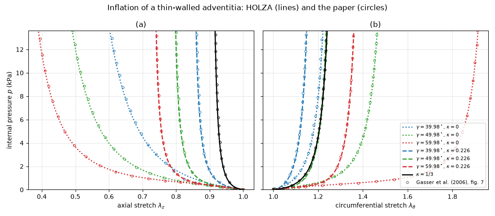
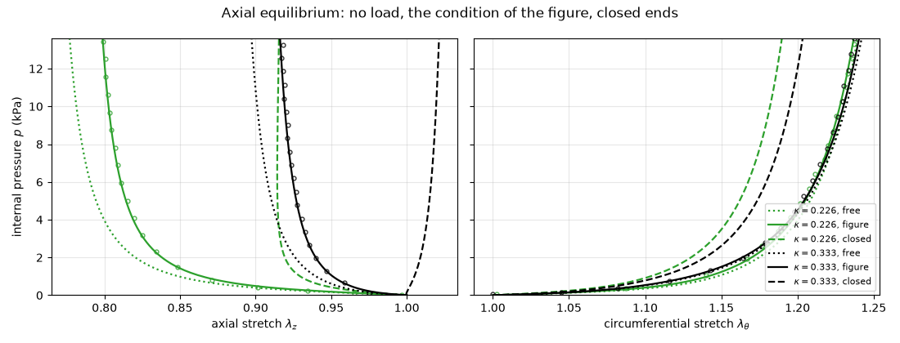

Note
Go to the end to download the full example code.
Anisotropic hyperelasticity - inflation of an arterial layer (HOLZA)
The HOLZA potential is the Gasser-Ogden-Holzapfel model of an arterial layer: a
neo-Hookean ground matrix reinforced by two families of dispersed collagen fibres,
\(\kappa = 0\) gives perfectly aligned fibres, \(\kappa = 1/3\) an isotropic
distribution (\(\kappa = 0\) is the model of Holzapfel, Gasser and Ogden, 2000). The
correspondence of the parameters with the papers, Abaqus and FEBio is tabulated in the HOLZA
entry of the UMAT catalog. This example reproduces figure 7 of the paper that introduced the
dispersion,
T. C. Gasser, R. W. Ogden, G. A. Holzapfel, Hyperelastic modelling of arterial layers with distributed collagen fibre orientations, J. R. Soc. Interface 3 (2006) 15-35,
the inflation of a thin-walled tube of iliac adventitia (their section 5.1): internal pressure
against axial and circumferential stretch, for three mean fibre angles \(\gamma\) (measured
from the circumferential direction) and three dispersions. The curves of the figure, read off
the paper, are in GOH2006_fig7_axial.csv and GOH2006_fig7_circumferential.csv.
The wall is a membrane, so a single material point carries it: \(\mathbf{e}_1\) is the circumferential direction, \(\mathbf{e}_2\) the axial one, \(\mathbf{e}_3\) the radial one, and the deformation gradient is \(\mathrm{diag}(\lambda_\theta, \lambda_z, \lambda_r)\). With \(R\) and \(H\) the reference radius and thickness, the deformed mid-radius is \(r = \lambda_\theta R\), the thickness \(h = \lambda_r H\) and the inner radius \(r_i = r - h/2\). The outer surface is free and the pressure follows from the circumferential equilibrium,
The axial equilibrium decides how the tube shortens. The wall carries the axial force \(N = 2\pi r h\,\sigma_{zz}\), and three conditions are compared:
"closed": closed ends, the pressure on the end caps loads the wall, \(N = \pi r_i^2 p\). This is the axial equation printed in the paper (their eq. 5.1), taken from Holzapfel and Gasser (Comput. Methods Appl. Mech. Engrg. 190 (2001) 4379-4403, eqs. 30 and 36), where it follows from the membrane equilibrium \(\sigma_z = r_i^2 p / (2 h r)\);"figure": \(N = \pi r_i\,p\), with \(r_i\) in millimetres and not squared. The curves of figure 7 are obtained with this condition: it reproduces all seven to the accuracy at which they can be read. The axial load is then about \(r_i \approx 5\) times smaller than with closed ends, and this is what lets the tubes shorten as in the figure: with closed ends the isotropic tube (\(\kappa = 1/3\)) lengthens whatever its stored energy, and the anisotropic ones hardly change length;"free": no axial load, \(N = 0\); the tubes then shorten more than in the figure.
# sphinx_gallery_thumbnail_number = 1
import os
import matplotlib.pyplot as plt
import numpy as np
import simcoon as sim
from simcoon.modular import HolzapfelElasticity
Material and geometry
The parameters are those of the paper (stresses in kPa, lengths in mm). The model is incompressible there; here the bulk modulus is five decades above \(c\), which keeps \(|J - 1|\) below \(10^{-4}\).
C, K1, K2 = 7.64, 996.6, 524.6 # kPa, kPa, -
BULK = 1.0e5 * C # kPa
R, H = 4.745, 0.43 # mm
P_MAX = 13.6 # kPa, the range of the figure
#: (label of the series in the data files, fibre angle in degrees, dispersion)
CASES = [
("g_40_0", 39.98, 0.0), ("g_50_0", 49.98, 0.0), ("g_60_0", 59.98, 0.0),
("g_40_226", 39.98, 0.226), ("g_50_226", 49.98, 0.226), ("g_60_226", 59.98, 0.226),
("base", 49.98, 1.0 / 3.0), # isotropic distribution: the angle no longer matters
]
def holza_props(gamma, kappa_d):
"""Props of the standalone ``HOLZA`` UMAT: two fibre families at :math:`\\pm\\gamma` from
:math:`\\mathbf{e}_1` in the :math:`(\\mathbf{e}_1, \\mathbf{e}_2)` plane. The trailing
selector is the volumetric potential (0: the default :math:`U(J)`)."""
fibres = sim.Rotation.from_euler("zxz", [[0.0, 0.0, gamma], [0.0, 0.0, -gamma]], degrees=True)
block = HolzapfelElasticity(C10=0.5 * C, k1=K1, k2=K2, kappa_d=kappa_d, fibres=fibres, kappa=BULK)
return np.asarray(block.potential_params() + [0.0], dtype=float)
The loading path
The membrane is a homogeneous material point, driven by sim.solver.solve in Kirchhoff
stress ("logarithmic" control, \(\boldsymbol{\tau} = J\boldsymbol{\sigma}\)): the hoop
stress is ramped, the radial stress and the shears are held at zero, and the axial stress is
the hoop stress times the ratio set by the axial condition,
The pressure follows from the solved stretches, \(p = \sigma_{\theta\theta} h / r_i\).
CONTROL = ["stress", "stress", "zero", "zero", "zero", "zero"]
TAU_MAX = 300.0 # kPa, enough for every curve to pass P_MAX
AXIAL_RATIO = { # sigma_zz / sigma_thetatheta
"free": lambda r, r_i: 0.0 * r,
"closed": lambda r, r_i: r_i / (2.0 * r),
"figure": lambda r, r_i: 1.0 / (2.0 * r),
}
def run_path(props, table):
step = sim.solver.StepMeca(control=CONTROL, mode="tabular", tabular=table)
res = sim.solver.solve(sim.solver.Block([step], control_type="logarithmic"), "HOLZA", props, 1)
return np.array([res["F"][i, i] for i in range(3)]) # lam_theta, lam_z, lam_r
Inflation of the membrane
Without axial load one solve is the answer. With closed ends, or the condition of the figure, the ratio depends on the deformed radius: the path is solved again with the ratio of the previous solution until the stretches no longer change (5 to 8 solves).
def inflate(gamma, kappa_d, axial="figure", ninc=400, tol=1.0e-10, maxpass=50):
props = holza_props(gamma, kappa_d)
time = np.linspace(0.0, 1.0, ninc + 1)[1:]
tau = TAU_MAX * time
stretch = np.ones((3, ninc))
for _ in range(maxpass):
r, h = stretch[0] * R, stretch[2] * H
table = np.column_stack([time, tau, tau * AXIAL_RATIO[axial](r, r - 0.5 * h)])
stretch, previous = run_path(props, table), stretch
if axial == "free" or np.abs(stretch - previous).max() < tol:
break
else:
raise RuntimeError(f"the axial load did not converge in {maxpass} passes ({axial})")
lam_theta, lam_z, lam_r = stretch
h = lam_r * H
pressure = tau / (lam_theta * lam_z * lam_r) * h / (lam_theta * R - 0.5 * h)
keep = pressure <= P_MAX
return (np.concatenate([[1.0], lam_theta[keep]]), np.concatenate([[1.0], lam_z[keep]]),
np.concatenate([[0.0], pressure[keep]]))
The curves of the paper
One table per panel of figure 7, with a series column naming the curve.
def paper_curves(filename):
here = os.path.dirname(os.path.abspath(__file__)) if "__file__" in globals() else os.getcwd()
table = np.genfromtxt(os.path.join(here, filename), delimiter=",", names=True, dtype=None, encoding="utf-8")
curves = {}
for name in np.unique(table["series"]):
rows = table[table["series"] == name]
order = np.argsort(rows["y"])
key = "base" if name.startswith("base") else name
curves[key] = (np.asarray(rows["x"], dtype=float)[order], np.asarray(rows["y"], dtype=float)[order])
return curves
paper_theta = paper_curves("GOH2006_fig7_circumferential.csv")
paper_z = paper_curves("GOH2006_fig7_axial.csv")
Figure 7 of the paper
Lines: HOLZA with the axial condition of the figure. Circles: the curves of the paper. The
deviation is measured in stretch, at the pressures of the points read off the paper (above
1 kPa: below, the curves are nearly horizontal and a reading error in pressure is a large
error in stretch).
def deviation(stretch, pressure, stretch_ref, pressure_ref):
inside = (pressure_ref > 1.0) & (pressure_ref < min(pressure.max(), P_MAX))
return np.abs(np.interp(pressure_ref, pressure, stretch) - stretch_ref)[inside].max()
fig, (ax_z, ax_theta) = plt.subplots(1, 2, figsize=(11, 4.8), sharey=True)
colors = {39.98: "tab:blue", 49.98: "tab:green", 59.98: "tab:red"}
worst = {"figure": [0.0, 0.0], "free": [0.0, 0.0], "closed": [0.0, 0.0]}
for label, gamma, kappa_d in CASES:
lam_theta_ref, p_theta_ref = paper_theta[label]
lam_z_ref, p_z_ref = paper_z[label]
lam_theta, lam_z, pressure = inflate(gamma, kappa_d, "figure")
isotropic = label == "base"
color = "k" if isotropic else colors[gamma]
style = "-" if isotropic else (":" if kappa_d == 0.0 else "--")
name = r"$\kappa = 1/3$" if isotropic else rf"$\gamma = {gamma:.2f}^\circ$, $\kappa = {kappa_d:g}$"
ax_theta.plot(lam_theta, pressure, style, color=color, lw=1.8, label=name)
ax_z.plot(lam_z, pressure, style, color=color, lw=1.8)
ax_theta.plot(lam_theta_ref[::2], p_theta_ref[::2], "o", color=color, ms=3.5, mfc="none", alpha=0.8)
ax_z.plot(lam_z_ref[::2], p_z_ref[::2], "o", color=color, ms=3.5, mfc="none", alpha=0.8)
dev = {"figure": (deviation(lam_theta, pressure, lam_theta_ref, p_theta_ref),
deviation(lam_z, pressure, lam_z_ref, p_z_ref))}
for axial in ("free", "closed"):
lt, lz, p = inflate(gamma, kappa_d, axial)
dev[axial] = (deviation(lt, p, lam_theta_ref, p_theta_ref), deviation(lz, p, lam_z_ref, p_z_ref))
for axial, (d_theta, d_z) in dev.items():
worst[axial] = [max(worst[axial][0], d_theta), max(worst[axial][1], d_z)]
print(f"gamma = {gamma:5.2f} deg, kappa = {kappa_d:5.3f}: deviation in stretch (circumferential, axial)"
+ "".join(f" {axial}: {d[0]:.4f}, {d[1]:.4f}" for axial, d in dev.items()))
print("largest deviation from the curves of the paper, in stretch (circumferential, axial):")
for axial, (d_theta, d_z) in worst.items():
print(f" {axial:7s} {d_theta:.4f} {d_z:.4f}")
ax_z.set_xlabel(r"axial stretch $\lambda_z$")
ax_z.set_ylabel("internal pressure $p$ (kPa)")
ax_z.set_title("(a)")
ax_theta.set_xlabel(r"circumferential stretch $\lambda_\theta$")
ax_theta.set_title("(b)")
ax_theta.plot([], [], "o", color="gray", ms=3.5, mfc="none", label="Gasser et al. (2006), fig. 7")
ax_theta.legend(fontsize=8, loc="lower right")
for ax in (ax_z, ax_theta):
ax.set_ylim(0.0, P_MAX)
ax.grid(alpha=0.3)
fig.suptitle("Inflation of a thin-walled adventitia: HOLZA (lines) and the paper (circles)")
fig.tight_layout()

gamma = 39.98 deg, kappa = 0.000: deviation in stretch (circumferential, axial) figure: 0.0035, 0.0219 free: 0.0257, 0.0750 closed: 0.1334, 0.3035
gamma = 49.98 deg, kappa = 0.000: deviation in stretch (circumferential, axial) figure: 0.0034, 0.0026 free: 0.0268, 0.0576 closed: 0.1769, 0.2779
gamma = 59.98 deg, kappa = 0.000: deviation in stretch (circumferential, axial) figure: 0.0028, 0.0030 free: 0.0375, 0.0477 closed: 0.2622, 0.3013
gamma = 39.98 deg, kappa = 0.226: deviation in stretch (circumferential, axial) figure: 0.0032, 0.0017 free: 0.0071, 0.0264 closed: 0.0402, 0.1194
gamma = 49.98 deg, kappa = 0.226: deviation in stretch (circumferential, axial) figure: 0.0041, 0.0013 free: 0.0096, 0.0226 closed: 0.0482, 0.1162
gamma = 59.98 deg, kappa = 0.226: deviation in stretch (circumferential, axial) figure: 0.0027, 0.0022 free: 0.0106, 0.0217 closed: 0.0571, 0.1234
gamma = 49.98 deg, kappa = 0.333: deviation in stretch (circumferential, axial) figure: 0.0038, 0.0017 free: 0.0055, 0.0205 closed: 0.0344, 0.1038
largest deviation from the curves of the paper, in stretch (circumferential, axial):
figure 0.0041 0.0219
free 0.0375 0.0750
closed 0.2622 0.3035
The axial condition
The reference set of the paper (\(\gamma = 49.98^\circ\), \(\kappa = 0.226\)) and the isotropic distribution under the three axial conditions. A tube with closed ends hardly changes length, or lengthens; the figure sits between closed ends and no axial load.
fig2, (bx_z, bx_theta) = plt.subplots(1, 2, figsize=(11, 4.2), sharey=True)
for label, gamma, kappa_d, color in [("g_50_226", 49.98, 0.226, "tab:green"), ("base", 49.98, 1.0 / 3.0, "k")]:
for axial, style in [("free", ":"), ("figure", "-"), ("closed", "--")]:
lam_theta, lam_z, pressure = inflate(gamma, kappa_d, axial)
name = rf"$\kappa = {kappa_d:.3g}$, {axial}"
bx_theta.plot(lam_theta, pressure, style, color=color, lw=1.6, label=name)
bx_z.plot(lam_z, pressure, style, color=color, lw=1.6)
bx_theta.plot(*[a[::2] for a in paper_theta[label]], "o", color=color, ms=3.5, mfc="none", alpha=0.8)
bx_z.plot(*[a[::2] for a in paper_z[label]], "o", color=color, ms=3.5, mfc="none", alpha=0.8)
bx_z.set_xlabel(r"axial stretch $\lambda_z$")
bx_z.set_ylabel("internal pressure $p$ (kPa)")
bx_theta.set_xlabel(r"circumferential stretch $\lambda_\theta$")
bx_theta.legend(fontsize=8, loc="lower right")
for bx in (bx_z, bx_theta):
bx.set_ylim(0.0, P_MAX)
bx.grid(alpha=0.3)
fig2.suptitle("Axial equilibrium: no load, the condition of the figure, closed ends")
fig2.tight_layout()
plt.show()

Total running time of the script: (0 minutes 2.316 seconds)